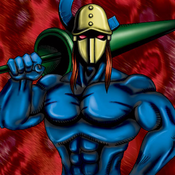

M-Warrior #1

Description: "When this card is flipped face-up, all M-Warrior #2s are increased 500 points."
STATS
ATK: 1000
DEF: 500DECK COST
Deck Cost per Card: 20EFFECT NOT IMPLEMENTED
Fusion List (52 Possible Fusions)
- M-Warrior #1 + Abyss Flower = Bean Soldier
- M-Warrior #1 + Ancient Jar = Minomushi Warrior
- M-Warrior #1 + Ancient Tree of Enlightenment = Bean Soldier
- M-Warrior #1 + Arlownay = Bean Soldier
- M-Warrior #1 + Blackland Fire Dragon = Sword Arm of Dragon
- M-Warrior #1 + Blue-Eyed Silver Zombie = Zombie Warrior
- M-Warrior #1 + Bone Mouse = Magical Ghost
- M-Warrior #1 + Burglar = Tiger Axe
- M-Warrior #1 + Charubin the Fire Knight = Flame Swordsman
- M-Warrior #1 + Clown Zombie = Armored Zombie
- M-Warrior #1 + Corroding Shark = Zombie Warrior
- M-Warrior #1 + Crawling Dragon #2 = Sword Arm of Dragon
- M-Warrior #1 + Cyber-Stein = Cyber Soldier
- M-Warrior #1 + Dancing Elf = Celtic Guardian
- M-Warrior #1 + Dark Gray = Tiger Axe
- M-Warrior #1 + Dark Plant = Bean Soldier
- M-Warrior #1 + Darkfire Dragon = Flame Swordsman
- M-Warrior #1 + Darkworld Thorns = Bean Soldier
- M-Warrior #1 + Dragon Zombie = Sword Arm of Dragon
- M-Warrior #1 + Fire Reaper = Zombie Warrior
- M-Warrior #1 + Flame Ghost = Zombie Warrior
- M-Warrior #1 + Flame Manipulator = Charubin the Fire Knight
- M-Warrior #1 + Flame Snake = Charubin the Fire Knight
- M-Warrior #1 + Frenzied Panda = Tiger Axe
- M-Warrior #1 + Fusionist = Tiger Axe
- M-Warrior #1 + Griggle = Bean Soldier
- M-Warrior #1 + Haniwa = Minomushi Warrior
- M-Warrior #1 + Hinotama Soul = Charubin the Fire Knight
- M-Warrior #1 + Jinzo #7 = Cyber Soldier
- M-Warrior #1 + Koumori Dragon = Sword Arm of Dragon
- M-Warrior #1 + Little Chimera = Tiger Axe
- M-Warrior #1 + Man Eater = Bean Soldier
- M-Warrior #1 + Mavelus = Flame Swordsman
- M-Warrior #1 + Mech Mole Zombie = Zombie Warrior
- M-Warrior #1 + Mechanical Spider = Cyber Soldier
- M-Warrior #1 + Milus Radiant = Tiger Axe
- M-Warrior #1 + Morphing Jar = Minomushi Warrior
- M-Warrior #1 + Muka Muka = Minomushi Warrior
- M-Warrior #1 + Mushroom Man = Bean Soldier
- M-Warrior #1 + Obese Marmot of Nefariousness = Tiger Axe
- M-Warrior #1 + One-Eyed Shield Dragon = Dragon Statue
- M-Warrior #1 + Petit Dragon = Dragon Statue
- M-Warrior #1 + Phantom Ghost = Zombie Warrior
- M-Warrior #1 + Pot the Trick = Minomushi Warrior
- M-Warrior #1 + Rainbow Flower = Bean Soldier
- M-Warrior #1 + Silver Fang = Tiger Axe
- M-Warrior #1 + The 13th Grave = Armored Zombie
- M-Warrior #1 + The Judgement Hand = Judge Man
- M-Warrior #1 + Torike = Tiger Axe
- M-Warrior #1 + Wings of Wicked Flame = Flame Swordsman
- M-Warrior #1 + Yamatano Dragon Scroll = Dragon Statue
- M-Warrior #1 + Yashinoki = Bean Soldier